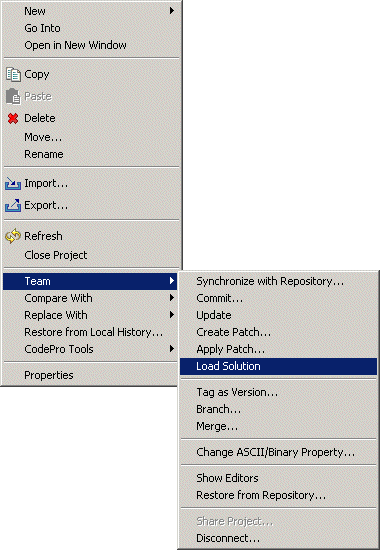

Team submenu:Once a solution is loaded in the workspace, the
projects and nested solutions that it contains can be recursively loaded
into the workspace from any context menu that contains a Team
submenu. For example, selecting a solution in the Navigator
view, right clicking, and then selecting Team > Load Solution
will recursively load all of the contained projects and nested
solutions.
During the loading process, if a project or solution already exists
in the workspace, then the user is prompted as to whether or not the
project or solution existing in the workspace should be overwritten. |
|
 |